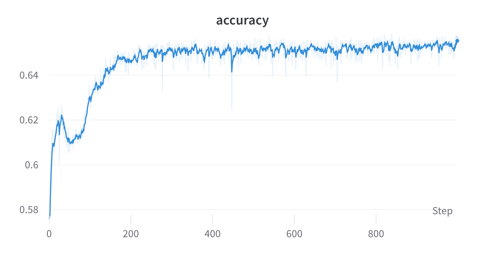
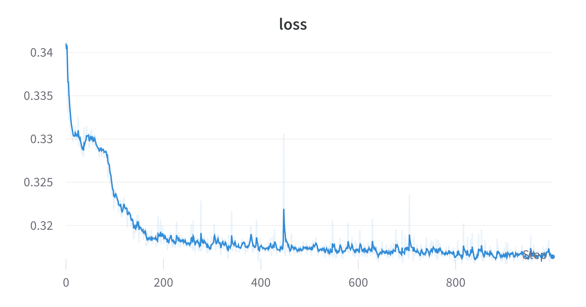
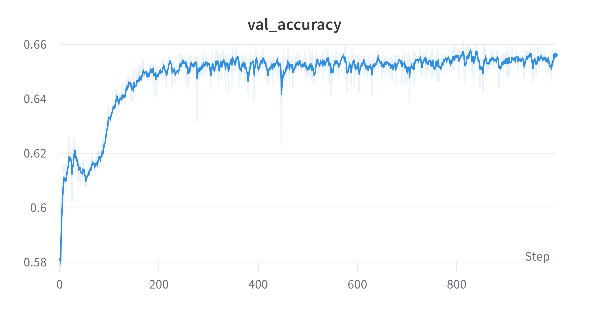
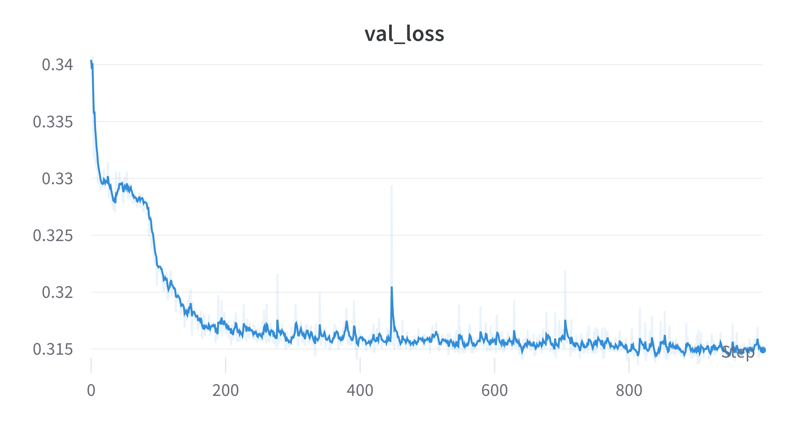
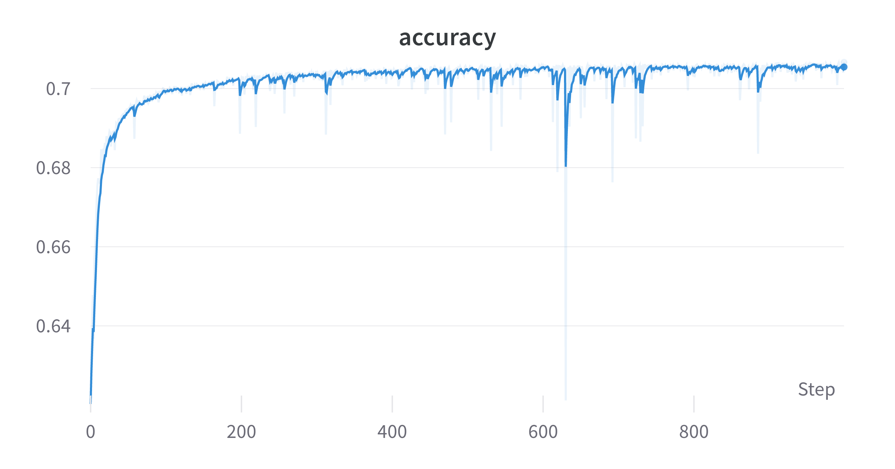
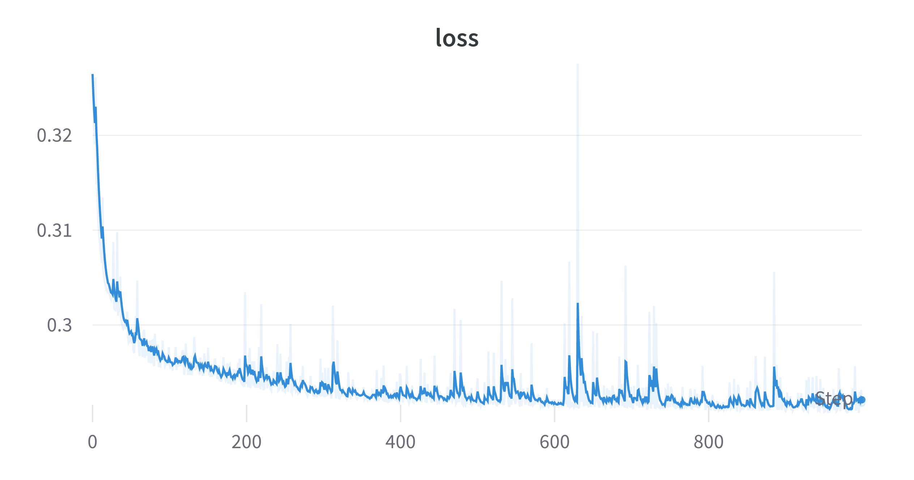
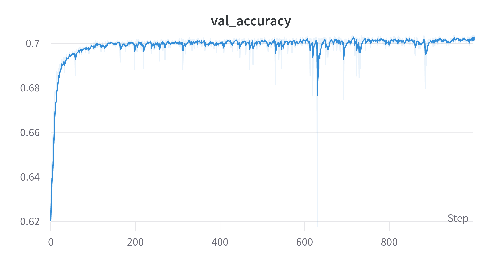
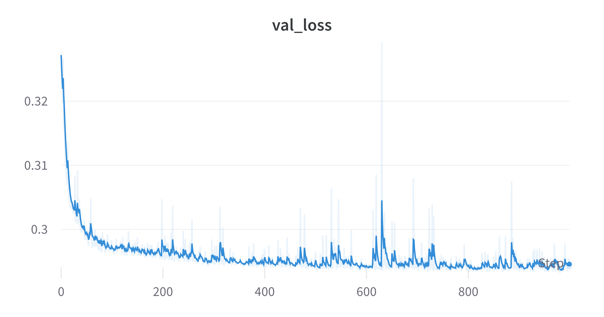

Data Augmentation Says
revealOptions: transition: ‘fade’ transitionSpeed: ‘fast’ width: 1400 —
Tuned some hyperparameters
- Cropped to 10 $\times$ 10 instead of 8 $\times$ 8 for the Electron-Photon dataset.
- Used batch size of 1024 over the full dataset.
- Tried data augmentation techniques like
- Random flip
- Random rotation
With Data augmentation
Train AUC: 0.70 | Test AUC: 0.70




Without Data augmentation
Train AUC: 0.76 | Test AUC: 0.759




What now?
- The data augmentation might need tuning. It has parameters like factor of rotation and fill mode.
- Testing these might give some better results.
- Decreasing the cropping might also give some better results.
Status
Done:
- Trained QCNNHybrid on EP with JAX + Pennylane and got some good results than past ones.
- Used data augmentation techniques but they need some fine tuning.
Goals for next week:
- Tuning data augmentation and other hyperparams.
- Work on the classical models to improve their AUC.